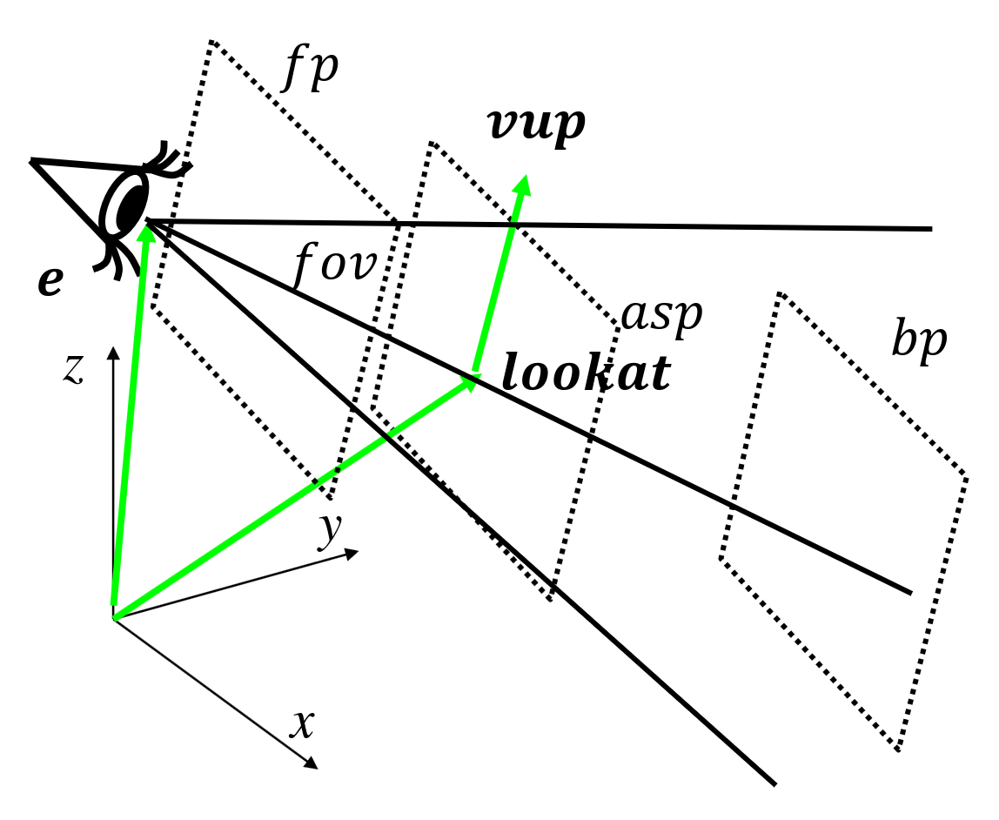
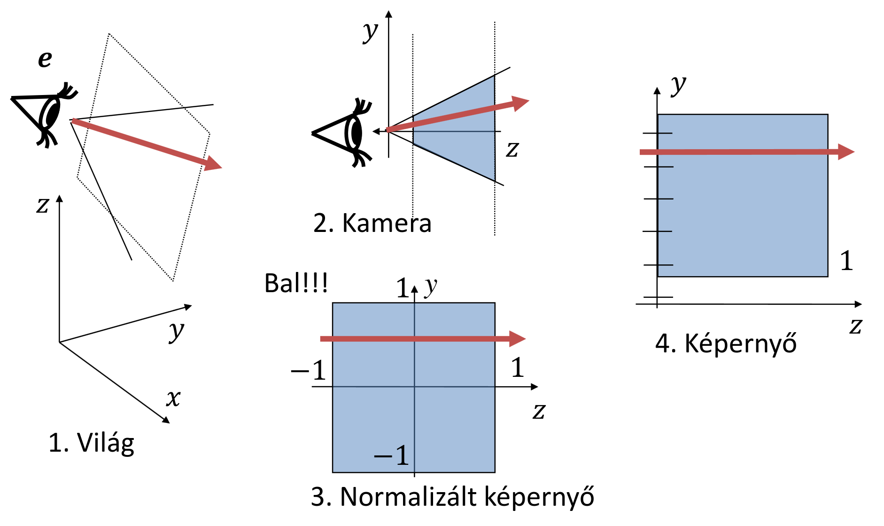
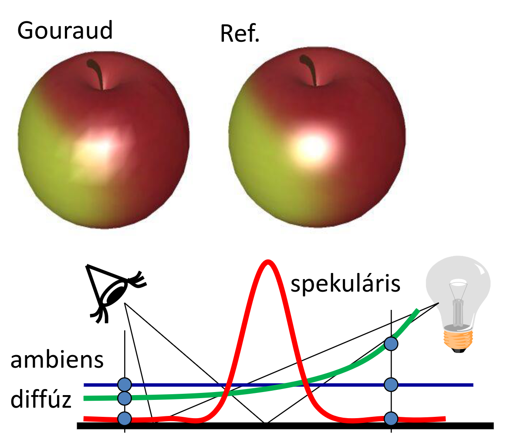

Inkrementális 3D képszintézis
Eddig úgymond pixelvezérelt 3D képszintézissel foglalkoztunk, ez viszont meglehetősen lassú és erőforrásigyényes folyamat.
\(\sim \text{Pixelszám} \times \text{Objektumszám} \times (\text{Fényforrásszám} + 1)\)
Most egy objektumvezérelt irányból fogjuk megközelíteni a dolgot, ennek sokkal egyszerűbb a hardveres implementációja, támogathatósága.
Tesszeláció
= felületek háromszögekre bontása
Magyarázat:
- felület parametrikus egyenletét használjuk
- paramétertér az egységnégyzet, innen behelyettesíthetünk bármilyen \(u, v\) párost a felület egyenletébe
- kapott pontokat kössük össze háromszögekkel (értelemszerűen úgy, hogy azok a paramétertérben szomszédosak)
\(r_{n, m} = r(u_n, v_m)\)
Továbbá szükségünk lesz valamilyen normálvektorra is:
- csúcsonként kiszámoljuk a normálvektort > az eredmény egy retro/low-poly hatás, jól elkülönülnek a háromszögek, még sima felületeknél is. > ha azt szeretnénk, hogy sima legyen:
- a normálvektorokat később interpoláljuk
Emléketzető paraméteres felületek normálvektorának kiszámításához (parciálisan deriváltakat keresztszorozzuk):
\(N = \cfrac{\partial r(u, v)}{\partial u} \times \cfrac{\partial r(u, v)}{\partial v}\)
Implementáció
class Geometry
{
protected:
unsigned int vao, vbo;
public:
Geometry()
{
glGenVertexArrays(1, &vao);
glBindVertexArray(vao);
glGenBuffers(1, &vbo);
}
virtual void Draw() = 0;
~Geometry()
{
glDeleteBuffers(1, &vbo);
glDeleteVertexArrays(1, &vao);
}
};
class ParamSurface : public Geometry
{
unsigned int nVtxStrip, nStrips;
struct VertexData
{
vec3 pos, norm;
vec2 tex;
};
virtual VertexData GenVertexData(float u, float v) = 0;
public:
void Create(int N, int M);
void Draw()
{
glBindVertexArray(vao);
for (int i = 0; i < nStrips; i++)
glDrawArrays(GL_TRIANGLE_STRIP, i * nVtxStrip, nVtxStrip);
}
};
void ParamSurface::Create(int N, int M)
{
nVtxStrip = (M + 1) * 2;
nStrips = N;
vector<VertexData> vtxData; // CPU-n
for (int i = 0; i < N; i++) for (int j = 0; j <= M; j++)
{
vtxData.push_back(GenVertexData((float)j / M, (float)i / N));
vtxData.push_back(GenVertexData((float)j / M, (float)(i + 1) / N));
// u // v
}
glBindVertexArray(vao);
glBindBuffer(GL_ARRAY_BUFFER, vbo);
glBufferData(GL_ARRAY_BUFFER, vtxData.size() * sizeof(VertexData),
&vtxData[0], GL_STATIC_DRAW);
glEnableVertexAttribArray(0); // AttArr 0 = POSITION
glEnableVertexAttribArray(1); // AttArr 1 = NORMAL
glEnableVertexAttribArray(2); // AttArr 2 = UV
glVertexAttribPointer(0, 3, GL_FLOAT, GL_FALSE, sizeof(VertexData), (void *)offsetof(VertexData, pos));
glVertexAttribPointer(1, 3, GL_FLOAT, GL_FALSE, sizeof(VertexData), (void *)offsetof(VertexData, norm));
glVertexAttribPointer(2, 2, GL_FLOAT, GL_FALSE, sizeof(VertexData), (void *)offsetof(VertexData, tex));
}
- az első funky for ciklus lehet egy kicsit érdekesebb, mi is történik itt?
- kigeneráljuk a paramétertér adott sorának és adott oszlopának térbeli pozícióját
- majd ugyan így a következő sorét
miért jó ez? ha sorban haladnánk, abból egymás utáni pontokat kapunk, ezeket nem lenne értelme háromszögként értelmezni ehelyett egy cikk-cakkos "legyező" mintát követünk ezt
GL_TRIANGLE_STRIP-ként (legyező) kezelve egyszerűen ki tudjuk rajzolni
- figyeljük meg hogy a csúcspontok generálásakor egy
VertexDataobjektumot kapunk vissza, ez tartalmazza a pozíciót, a normálist, és a textúra (UV) koordinátákat is - ki hogy szereti, stride vagy több VBO, Szirmay több VBO-val szereti
- szét is szedjük 3 külön VBO-ba, a vertexdata megfelelő értékeivel feltöltve
Transzformációk
(M odel) Modellezési transzformáció:
(V iew) Kamera transzformáció:
(P rojection) Perspektív transzformáció:
MVP transzformáció:
a fenti hármat kiszámolhatjuk egyben is, nem kell csúcspontonként háromszor mátrixszorozni
Modellezési (Model) transzformáció
- a pontjaink referenciahelyzetben vannak meg
- Descartes koordinátákat át kell váltanunk homogén koordinátákba
-
kell egy mátrix ami
- skálázza
- elforgatja
- eltolja
az alakzatot
-
skálázás \(s_x, s_y, s_z\)-vel való átméretezés $$ \begin{bmatrix} s_x & 0 & 0 & 0 \newline 0 & s_y & 0 & 0 \newline 0 & 0 & s_z & 0 \newline 0 & 0 & 0 & 1 \newline \end{bmatrix} $$
-
orientáció \(d\) egységvektor körül \(\varphi\) szöggel való forgatás (tehát \(d\) lesz a forgás tengelye) $$ \begin{bmatrix} i_x & i_y & i_z & 0\newline j_x & j_y & j_z & 0\newline k_x & k_y & k_z & 0\newline 0 & 0 & 0 & 1\newline \end{bmatrix} $$ \(i, j, k\) vektorokat úgy kapjuk meg, hogy a hozzájuk tartozó bázisvektorokra alkalmazzuk az alábbi képletet:
\[r' = r \cos(\varphi) + d(r \cdot d) (1 - \cos(\varphi)) + (d \times r) \sin(\varphi)$$ asd 3. pozíció $v_x, v_y, v_z$-vel való eltolás $$ \begin{bmatrix} 1 & 0 & 0 & 0\newline 0 & 1 & 0 & 0\newline 0 & 0 & 1 & 0\newline v_x & v_y & v_z & 1\newline \end{bmatrix} \] -
tehát a modellezési transzformáció mátrixunk a $$ \bold{T}_\text{M} = \begin{bmatrix} s_x & 0 & 0 & 0\newline 0 & s_y & 0 & 0\newline 0 & 0 & s_z & 0\newline 0 & 0 & 0 & 1\newline \end{bmatrix} \begin{bmatrix} i_x & i_y & i_z & 0\newline j_x & j_y & j_z & 0\newline k_x & k_y & k_z & 0\newline 0 & 0 & 0 & 1\newline \end{bmatrix} \begin{bmatrix} 1 & 0 & 0 & 0\newline 0 & 1 & 0 & 0\newline 0 & 0 & 1 & 0\newline v_x & v_y & v_z & 1\newline \end{bmatrix} $$ \(4 \times 4\)-es mátrix lesz
-
normálvektorhoz a mátrix inverzével szorozzuk a normál vektor transzponáltját
Kamera (View) transzformáció
eltolás, elforgatás, annak érdekében, úgy, hogy a kameránk legyen az origó(ban) és a \(-z\) irányba nézzen (affin)

- \({e}\): eye - szem pozíciója
- \(\text{lookat}\): ide nézünk, a nézetünk/képernyő téglalap középpontja
- \(\text{vup}\): a függőlegesen felfelének tekintett irány
- \(\text{fov}\): field of view = látószög
- \(\text{asp}\): aspect = képarány (vízszintes \(\ratio\) függőleges)
- \(\text{fp, bp}\): front plane, back plane = első és hátsó vágósík, ami ezeken kívül esik azokat figyelmen kívül hagyjuk

van egy ilyen ábra is hurrá, nem teljesen sikerült értelmezni de:
a különböző terek, koordináta rendszerek, sorban
E modell szerinti kamera (view) transzformációs mátrix tehát:
\(w = (e - \text{lookat})/|e-\text{lookat}|\) (leosztunk a hosszával avagy normalizáljuk)
\(u = (\text{vup} \times w)/|\text{vup} \times w|\) (úgyszintén)
\(v = w \times u\)
invertálás: a mátrixunk egy ortonormál mátrix (ahol a sorok egységvektorok és egymásra merőlegesek) ilyen mátrix inverze a saját transzponáltja
Perspektív (Projection) transzformáció:
Látószög normalizálás: $$ \begin{bmatrix} \cfrac 1 {\tan(\frac {\text{fov}} 2 ) \cdot \text{asp}} & 0 & 0 & 0\newline 0 & \cfrac 1 {\tan(\frac {\text{fov}} 2 )} & 0 & 0\newline 0 & 0 & 1 & 0\newline 0 & 0 & 0 & 1\newline \end{bmatrix} $$
Miért jó ez? Ezzel skálázzuk a nézetet hogy stimmeljen a látószög (itt 90°) és a képarány.
Perspektíva:
A sugaraink jelenleg mind a kamerából indulnak, így viszont torz képet kapnánk. Ha azt szeretnénk, hogy tényleg pespektívának tűnjön, ahhoz párhuzamos sugarak kellenek.
Kis emlékeztető (egyenes egyenlete): \(y = m \cdot x + b\)
Origón átmenő: \(y = m \cdot x\)
Vízszintes: \(y = b\)
\((-m_x z, -m_y z, z)\) -ből kell tehát valahogyan \((m_x, m_y, z^*)\)-ot előállítani
Homogén koordinátákkal ez úgy néz ki, hogy:
\([-m_x z, -m_y z, z, 1] \rightarrow [-m_x, -m_y, z^*, 1] \sim [-m_x z, -m_y z, -zz^*, -z]\)
Ezt valamilyen
mátrixszal tudnák elérni.
Keressük tehát \(\alpha\)-t és \(\beta\)-t:
\(-zz^* = \alpha z + \beta \rightarrow z^* = -\alpha -\beta / z\)
Ábrán is látszik, hogy \(-fp\)-t tekintjük majd \(-1\)-nek, \(-bp\)-t pedig \(1\)-nek.
Felírhatjuk ezeket egyenletekként:
\(-1 = \alpha \cdot (-fp) + \beta\)
$ 1 = \alpha \cdot (-bp) + \beta$
Átrendezve pedig kijön, hogy
\(\alpha = \cfrac{(fp+bp)}{bpfp}\)
\(\beta = \cfrac{2fp \cdot bp}{bpfp}\)
Helyettesítsük be és szorozzuk meg a látószög normalizáláshoz használt mátrixszal:
Tömör gyönyör :3c
Z-fighting
\(z^*\) nem lineáris függvénye a \(z\)-nek, távolban lévő pontokról nem tudjuk eldönteni, hogy melyik van közelebb.
\(\cfrac{fp}{bp}\) nem lehet kicsi!
Perspektív torzítás = homogén osztás
\((x^*, y^*, z^*) = (X/w, Y/w, Z/w) \qquad \boxed{w = z_c}\)
(\(z_c\): kamera szerinti koordináta)
Implementáció
Camera osztály
class Camera
{
vec3 wEye, wLookat, wVup; // extrinsic parameters
float fov, asp, fp, bp; // intrinsic parameters
public:
mat4 V()
{ // view matrix
vec3 w = normalize(wEye - wLookat);
vec3 u = normalize(cross(wVup, w));
vec3 v = cross(w, u);
return TranslateMatrix(-wEye) * mat4(u.x, v.x, w.x, 0,
u.y, v.y, w.y, 0,
u.z, v.z, w.z, 0,
0, 0, 0, 1);
}
mat4 P()
{ // projection matrix
float sy = 1 / tanf(fov / 2);
return mat4(sy / asp, 0, 0, 0,
0, sy, 0, 0,
0, 0, -(fp + bp) / (bp - fp), -1,
0, 0, -2 * fp * bp / (bp - fp), 0);
}
};
Transzformációk előkészítése a GPU-n
void Draw()
{
mat4 M = ScaleMatrix(scale) *
RotationMatrix(rotAng, rotAxis) *
TranslateMatrix(pos);
mat4 Minv = TranslateMatrix(-pos) *
RotationMatrix(-rotAngle, rotAxis) *
ScaleMatrix(1 / scale);
mat4 MVP = M * camera.V() * camera.P();
shader->setUniform(M, "M"); //
shader->setUniform(Minv, "Minv"); // GPU változóinak állítása
shader->setUniform(MVP, "MVP"); //
glBindVertexArray(vao);
glDrawArrays(...);
}
A hozzá tartozó csúcspontárnyaló (vertex shader)
uniform mat4 M, Minv, MVP;
layout(location = 0) in vec3 vtxPos;
layout(location = 1) in vec3 vtxNorm;
out vec4 color;
void main()
{
gl_Position = vec4(vtxPos, 1) * MVP;
vec4 wPos = vec4(vtxPos, 1) * M;
vec4 wNormal = Minv * vec4(vtxNorm, 0);
color = Illumination(wPos, wNormal);
}
Vágás
Mit látok? Normalizáltunk mindent is, minden tengelyen a \((-1, 1)\) intervallumot kell csak figyelembe vennem, hogy jó legyen.
A normalizált eszközkoordinátarendszerben, homogén koordinátákkal:
Viewport transzformáció
Normalizáltból (NDC) képernyőkoordinátákba:
\(\text{Magyarázat: ...}\)
Transzformációs csővezeték
Az egyes transzformációkat külön a CPU-n:
- MVP
- Modell
- Modell-inverz
Ezeket átadjuk a csúcspontárnyalónak. Vágás homogén koordinátákban, utána visszatérhetünk Descartes koordinátákba.
Takarás
Képernyő koordinátarendszerben
- sugarak a \(z\) tengyellyel párhuzamosak tehát
- sugárparaméter = \(z\) koordináta
- \((x, y, z)\) pont az \((x, y)\) pixelben látszik
Az alapján, hogy hogyan határozzuk meg, hogy mi látszik közelebb beszélhetünk:
Objektumtér algoritmusok (folytonos):
- láthatóságfelbontás nem függ a felbontástól
Képtér algoritmusok (diszkrét):
- mi látszik a pixelben?
- pl. sugárkövetésnél
Backface culling (hátsólap eldobás)
tldr: azon háromszögeket amik nem felénk néznek, azt fogjuk csinálni amit a tárgy okozta fájdalmainkkal: ignoráljuk
Fun fact: óramutató járásával megegyeznek a pontok, ezért van r3 és r2 más sorrendben.
Nem felénk néző háromszögeket eldobjuk. Felénk néz, ha \(n_z < 0\)
Feltételezés: kívülről általában a csúcsok óramutatóval megegyező körüljárásúak
Z-buffer
- objektumcentrikus
- a pixelek sugárparamétereit (azaz \(z\) koordinátáit, ezért z-buffer) egy tömbben tartjuk nyilván
- ezt minimum kereséshez fogjuk használni, tehát maximális mélységűre (\(1\)-re) fogjuk inicializálni
- háromszögeket egyesével meglátogatjuk és jó prog1-et végzett hallgató módjára ha kisebbek vagyunk a minimumnál akkor felülírjuk stb.
Lineáris interpoláció
Minden egyes soron, azon belül az oszlopain végiglépegetünk, és kiszámoljuk \(z\)-t. Ez költséges művelet, amit úgy tudunk felgyorsítani, hogy kiszámoljuk a sor első \(z\) koordinátáját, majd a következő cellánál ezt az eredményt felhasználjuk, hozzáadunk egy \(a\) értéket. \(a\) megadja, hogy egy pixelt az \(x\) irányba lépve \(z\) mennyit változik (kvázi meredekség). Ezt azért tehetjük meg mert a háromszög felülete lapos, \(z\) lineárisan változik.
Tehát \(a = \cfrac{-n_x}{n_z}\)
Takarás OpenGL-ben
int main(int argc, char *argv[])
{
...
glutInitDisplayMode(GLUT_RGBA | GLUT_DOUBLE | GLUT_DEPTH);
glEnable(GL_DEPTH_TEST); // z-buffer is on
glDisable(GL_CULL_FACE); // backface culling is off
...
}
Árnyalás
Lokális illumináció árnyék nélkül
Röhögve tudjuk már a képletet fejből, hogy:
\(L(V) \approx \sum_l {L^\text{in}}_l \cdot f_r(L_l, N, V) \cdot \cos^+ {\theta^\text{in}}_l\)
Nade ezt mégse kéne pixelenként (lassú).
-
csúcspontonként: csúcspontokon belül az \(L\) "szín" interpolációja > Gouraud árnyalás (per-vertex shading)
-
Pixelenként: belül a normál vektort interpoláljuk: > Phong árnyalás (per-pixel shading)
Gouraud árnyalás

yadda yadda megszokott módon csúcsokra kiszámoljuk, okos diák módjára tudjuk már hogy kell jól interpolálni stb stb, DE
Sok sebből vérzik:
- anyagtulajdonság konstans
- árnyék nincs (nem tudna különben színt interpolálni)
- durva tesszcelláció mellet csúnya a spekuláris (a komponens huplija elveszhet, mert a függvény erősen nem lináris)
Vertex shader:
uniform mat4 MVP, M, Minv; // MVP, Model, Model-inverse
uniform vec4 kd, ks, ka; // diffuse, specular, ambient ref
uniform float shine; // shininess for specular ref
uniform vec4 La, Le; // ambient and point sources
uniform vec4 wLiPos; // pos of light source in world
uniform vec3 wEye; // pos of eye in world
layout(location = 0) in vec3 vtxPos; // pos in modeling space
layout(location = 1) in vec3 vtxNorm; // normal in modeling space
out vec4 color; // computed vertex color
void main()
{
gl_Position = vec4(vtxPos, 1) * MVP; // to NDC
vec4 wPos = vec4(vtxPos, 1) * M;
vec3 L = normalize(wLiPos.xyz * wPos.w - wPos.xyz * wLiPos.w);
vec3 V = normalize(wEye - wPos.xyz / wPos.w);
vec4 wNormal = Minv * vec4(vtxNorm, 0);
vec3 N = normalize(wNormal.xyz);
vec3 H = normalize(L + V);
float cost = max(dot(N, L), 0), cosd = max(dot(N, H), 0);
color = ka * La + (kd * cost + ks * pow(cosd, shine)) * Le;
}
in vec4 color; // interpolated color of vertex shader
out vec4 fragmentColor; // output goes to frame buffer
void main()
{
fragmentColor = color;
}
Phong árnyalás
hasonló a történet
- csúcspontokban tehát tudjuk a tulajdonságait
- belső pixelenként elvégezzük a vektorok lineáris interpolációját
- nem felejtük el normalizálni a interpolációval kapott vektorokat, hogy egység hosszúak legyenek (ugyanis ez nem garantált)
Vertex shader:
uniform mat4 MVP, M, Minv; // MVP, Model, Model-inverse
uniform vec4 wLiPos; // pos of light source
uniform vec3 wEye; // pos of eye
layout(location = 0) in vec3 vtxPos; // pos in model sp
layout(location = 1) in vec3 vtxNorm; // normal in model sp
out vec3 wNormal; // normal in world space
out vec3 wView; // view in world space
out vec3 wLight; // light dir in world space
void main()
{
gl_Position = vec4(vtxPos, 1) * MVP; // to NDC
vec4 wPos = vec4(vtxPos, 1) * M;
wLight = wLiPos.xyz * wPos.w - wPos.xyz * wLiPos.w;
wView = wEye - wPos.xyz / wPos.w;
wNormal = (Minv * vec4(vtxNorm, 0)).xyz;
}
uniform vec3 kd, ks, ka; // diffuse, specular, ambient ref
uniform float shine; // shininess for specular ref
uniform vec3 La, Le; // ambient and dir/point source rad
in vec3 wNormal; // interpolated world sp normal
in vec3 wView; // interpolated world sp view
in vec3 wLight; // interpolated world sp illum dir
out vec4 fragmentColor; // output goes to frame buffer
void main()
{
vec3 N = normalize(wNormal);
vec3 V = normalize(wView);
vec3 L = normalize(wLight);
vec3 H = normalize(L + V);
float cost = max(dot(N, L), 0), cosd = max(dot(N, H), 0);
vec3 color = ka * La + (kd * cost + ks * pow(cosd, shine)) * Le;
fragmentColor = vec4(color, 1);
}
2D textúrázás ismét
Ez történik ha linárisan interpoláljuk a textúrát.
nem követi a perspektívát oké de akkor hogy csináljuk jól?
Kiszámoljuk az affin transzformációt a 2D és a 3D háromszög között, ennek az inverzével meg tudjuk határozni a pixel pozícióját textúratérben.
Inkrementális képszintézis csővezeték
Azért transzformáltunk, hogy a láthatósági feladatot és a vetítést képernyő koordináta-rendszerben oldhassuk meg
- Triviális hátsó lap eldobás
- Z-buffer algoritmus
- Vetítés = z eldobása, 3D háromszög = 2D háromszög
Per-pixel árnyalás:
- Vektorokat csúcspontonként számítjuk és pixelekre interpoláljuk
- Illuminációs képlet pixelenként
Kvíz
1. A parametrikus felület tesszellációjánál a egységnégyzet paraméter tartományban 8x8 pontot vettünk fel szabályos rácsban. A felületet GL_TRIANGLES típussal jelentíjük meg. Hány csúcspontból fog állni a VBO.
Megoldás:
Vigyázunk hogy cselesen GL_TRIANGLES-t kér. Tehát háromszögenként 3 csúcs.
\(8 \times 8\) pont rács, elképzelhetjük egy \(7 \times 7\)-es táblázatként, cellánként \(2\) háromszög, háromszögenként \(3\) csúcs, azaz
\(7 \cdot 7 \cdot 2 \cdot 3 = 294\)
2. Egy paraméteres felület: $$ x(u,v)=3u+6.7v+3uv \newline y(u,v)=6.5u+6.7v+3 uv \newline z(u,v)=1.3u+6.7v+3 uv \newline $$ Mekkora az nx/nz, azaz a normálvektor x és z komponensének aránya az (u,v)=(1,1) pontban?
Megoldás:
Meglátjuk, hogy paraméteres, és mint az őrült nekiállunk parciálisan deriválni:
\(x(u, v)\): $$ \cfrac{\partial x}{\partial u} = 3 + 3v\ ~\ \cfrac{\partial x}{\partial v} = 6.7 + 3u\ $$ \(y(u, v)\): $$ \cfrac{\partial y}{\partial u} = 6.5 + 3v\ ~\ \cfrac{\partial y}{\partial v} = 6.7 + 3u\ $$ \(z(u, v)\): $$ \cfrac{\partial z}{\partial u} = 1.3 + 3v\~\ \cfrac{\partial z}{\partial v} = 6.7 + 3u\ $$
Emlékszünk, hogy
\(N = \cfrac{\partial r(u, v)}{\partial u} \times \cfrac{\partial r(u, v)}{\partial v}\)
Ez pedig nem más, mint
Tehát az arányuk \(\cfrac{n_x}{n_y} = \cfrac{50.44}{-33.95} = -1.485\)
3. A parametrikus felület tesszellációjánál a egységnégyzet paraméter tartományban 7x7 pontot vettünk fel szabályos rácsban. A felületet GL_TRIANGLE_STRIP típussal jelentíjük meg. Hány csúcspontból fog állni a VBO.
Megoldás:
Itt GL_TRIANGLE_STRIP-ben kéri.
Ezt legjobban a példakód magyarázza el.
\(7 \times 7\) pontunk van, \(6\) sor \(7\) pont**páros**án megyünk végig, azaz \(6 \cdot 7 \cdot 2 = 84\) pontunk lesz a VBO-ban.
4. Egy háromszög három csúcsa képernyő koordinátarendszerben:
(13, 67, 0.6)
(56, 80, 0.7)
(78, 13, 0.9)Mennyivel változik a z koordináta, amikor a kitöltés során egy pixelről a jobboldali szomszéd pixelre lépünk?
Megoldás:
Interpolálni mindenki tud ügyebár, ki kell számolnunk az \(a\) értékét.
Előtte viszont szükségünk van a normálvektorra. Ez háromszögeknél:
\(n = (r3 - r1) \times (r2 - r1) = (65, -54, 0.3) \times (43, 13, 0.1) = (-9.3, 6.4, 3167)\)
\(a\) pedig nem más, mint
\(a = \cfrac{-n_x}{n_z} = \cfrac{9.3}{3167} = 0.003\)